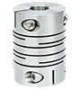

客服專線：(03)496-6085
產品介紹
聯軸器代理商
撓性、擾性、鍊條式、橡膠式聯軸器規格選用諮詢專業，桃園翔盛值得推薦
知名tsd聯軸器與聯軸器橡膠規格種類、功用專賣代理商，翔盛商譽好、服務收費經濟
熟知各種聯軸器規格的翔盛，是業界知名的聯軸器代理商，擁有豐富多元的聯軸器種類商品，可以根據客戶的不同需求，給予不同聯軸器功用的使用購買建議，幫助客戶順利購買到符合理想的聯軸器，並享受到tsd聯軸器等的好品質。非常注重產品耐用度與穩定性的翔盛，所有的聯軸器橡膠都出自於高級的原料，使用過的客戶都相當滿意，認為翔盛是優異的聯軸器專賣廠商。如果您正在尋找商譽好、服務收費經濟的tsd聯軸器與聯軸器橡膠規格種類、功用專賣代理商，請指名翔盛。
產品展示 |
 |  |
 |
撓性、擾性、鍊條式、橡膠式聯軸器規格選用諮詢專業，桃園翔盛值得推薦
身為專業的撓性聯軸器製作專家，翔盛自成立以來，便堅持提供大家優質的各種撓性聯軸器規格服務，並且由專人提供一對一完整服務，幫助客戶選擇適合的聯軸器選用訂購方案，讓客戶可以用優惠的價格，輕鬆購買擾性聯軸器或鍊條式聯軸器。為了體貼大家，翔盛也提供專業的電話諮詢服務，大家可以針對聯軸器的使用需求，來電與專人進行橡膠式聯軸器的洽詢討論，會有熱情、專業的工作人員仔細地回覆。撓性、擾性、鍊條式、橡膠式聯軸器規格選用諮詢服務一流的翔盛，是值得推薦的桃園聯軸器廠商，期待為您服務。
銷售諮詢專線：03-496-6085。